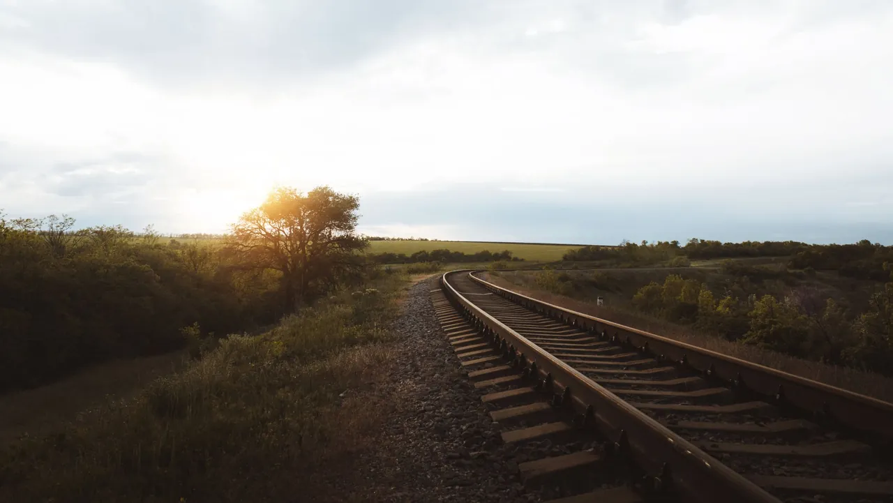
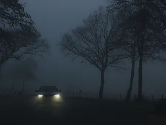
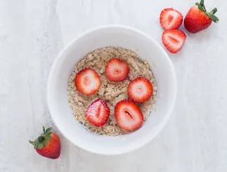
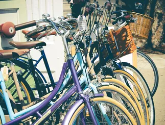
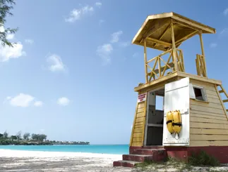
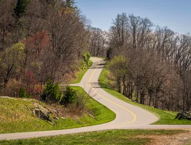
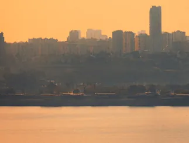
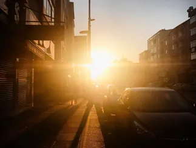
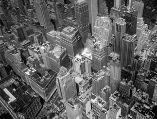

Video production studio · since 2012
Video production for brands that want to be seen
Commercials, brand films and social video, from the first idea to the final colour grade. One small crew, one clear plan and footage made to work on every screen.
The studio
A small crew with a big camera
Brightcut is a video production studio of directors, camera operators and editors who have worked together for more than ten years. We plan every shoot like a small film: a clear story, the right light and nothing left to chance on the day.
You talk to the same people from the first call to the last export, and you always know what happens next.
- 340+ videos delivered
- 12 years behind the camera
- 48 h first edit after a shoot

What we make
Video for every stage of your brand
Brand films
Two to three minutes that show who you are, why you do it and who you do it for.
Commercials
Short spots for TV, cinema and online ads, cut in every length and format you need.
Social media video
Vertical series for Instagram, TikTok and YouTube Shorts, planned as a month of content.
Food & product video
Macro shots, slow motion and clean studio light that make products look their best.
Events & documentaries
Conferences, launches and behind-the-scenes stories filmed quietly and edited fast.
Video for your website
Light, web-ready loops and embeds, prepared for your WordPress site so pages stay fast.
Selected work
Stills from recent productions

After Midnight Music video · Lune Rivers Spice Road Recipe series · Marlow Kitchen 
Morning Bowl TV spot · Hillcrest Dairy Green Plate Social spots · Leaf & Co. Quiet Season Tourism film · Dunewick Coast 
Two Wheels Short documentary · City Cycle Club 
Tower Nine Summer campaign · Sandhaven 
The Long Trail Hiking film · Northpeak Outdoors 
Haze Music video · The Paper Lanterns Old Line Heritage documentary · Valley Railway Trust 
Golden Hour Brand film · Amberly Streetwear 
Vertical City Timelapse series · Skyframe
How we work
From brief to final cut in four steps
- 01
Brief
A call about your goal, audience and budget. You get a one-page plan and a fixed price.
- 02
Pre-production
Script, storyboard, locations and casting, all approved before a camera is switched on.
- 03
Shoot
One or two focused days with our own cameras, lights and sound.
- 04
Edit & deliver
First cut in 48 hours, two rounds of changes, then colour, sound mix and every format you need.
The crew
The people behind the camera
Mara Vidal
Director & founder
Turns a brief into a story in one afternoon and still storyboards everything by hand.
Teo Okafor
Director of photography
Chases natural light and keeps a drone licence and a steady hand in the same bag.
Lina Sørensen
Editor & colourist
Finds the rhythm in hours of footage and gives every project its own colour.
“They filmed our whole product range in two days and the ads beat our best campaign by a mile.”
“Calm on set, fast in the edit and honest about what works. We book them every season.”
Start a project
Tell us what you want to film
Share a few lines about your idea. We reply within one working day with questions, a rough plan and a price range.
- Studio
- Dock 4, Harbour Lane, Riverton
- hello@brightcut.example
- Hours
- Mon–Fri 9:00–18:00, shoots any day